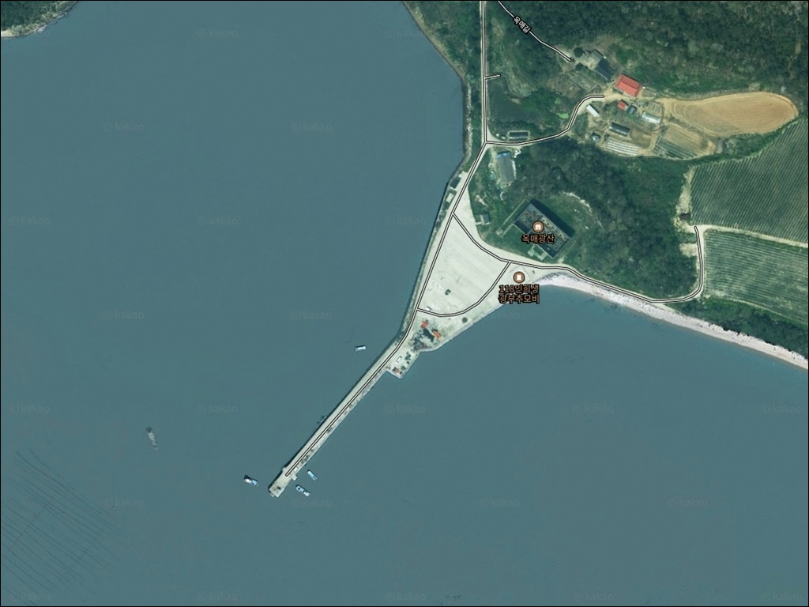
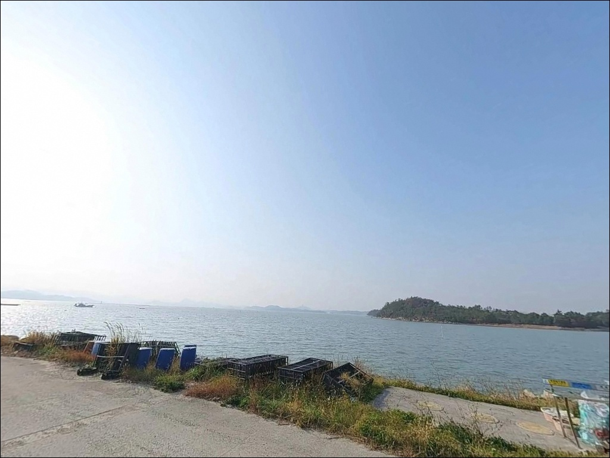
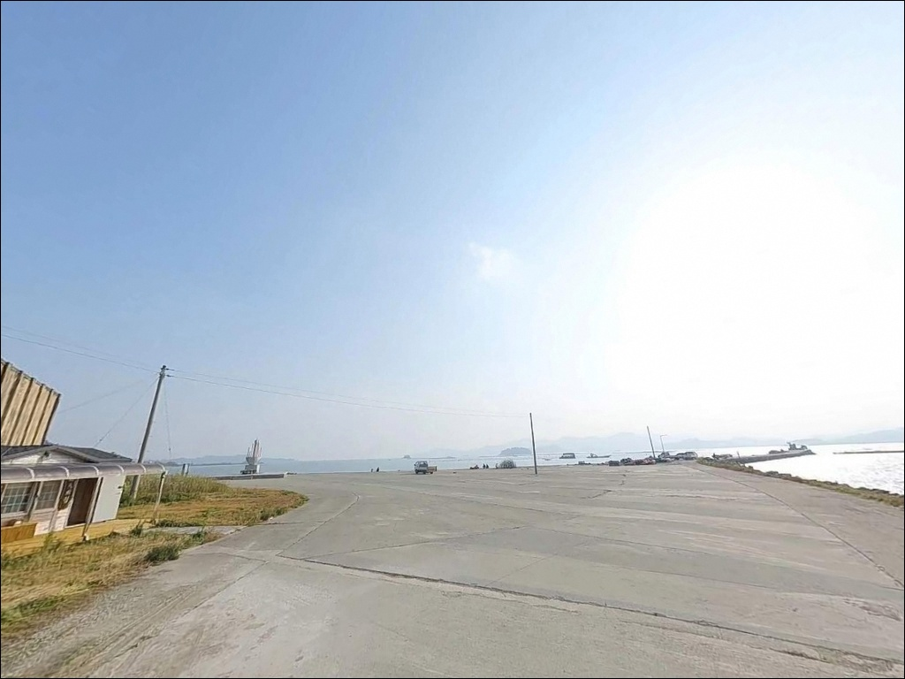
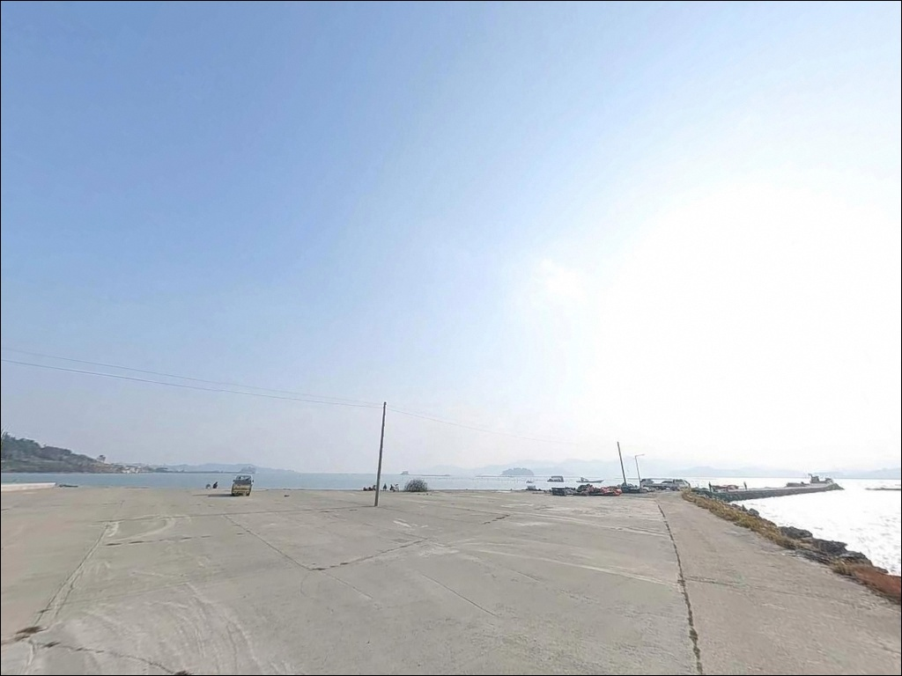
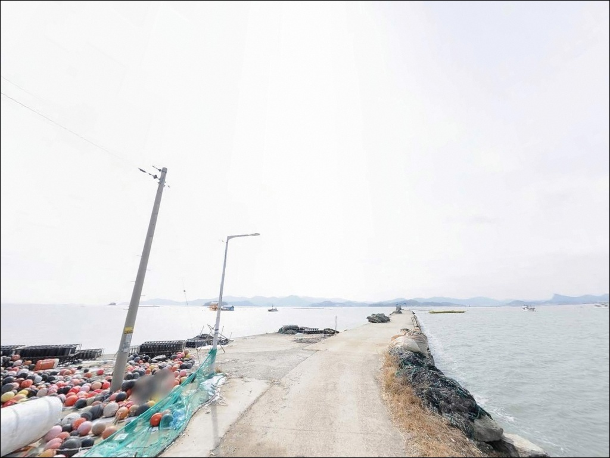
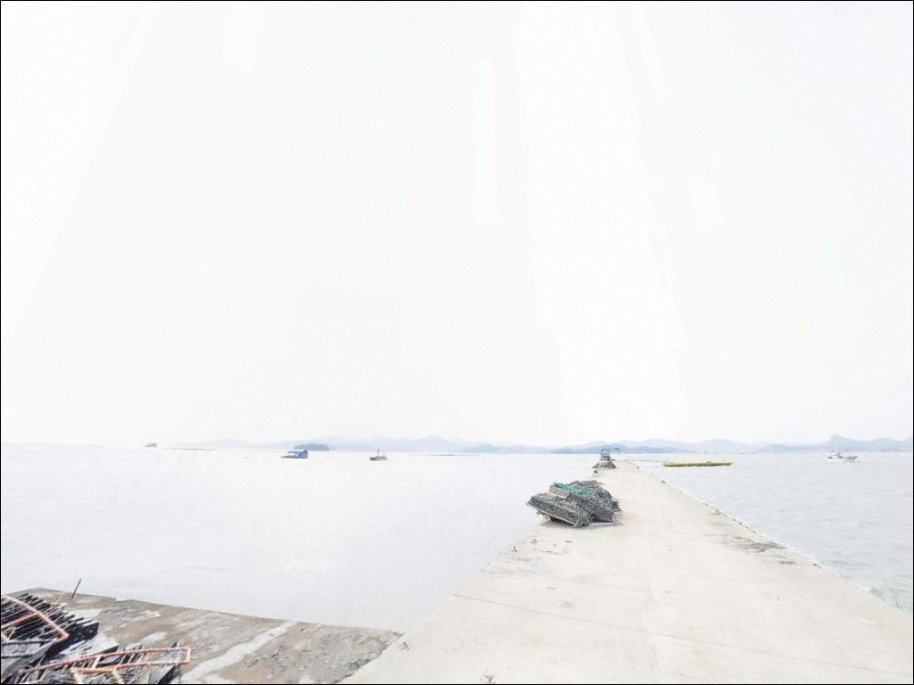
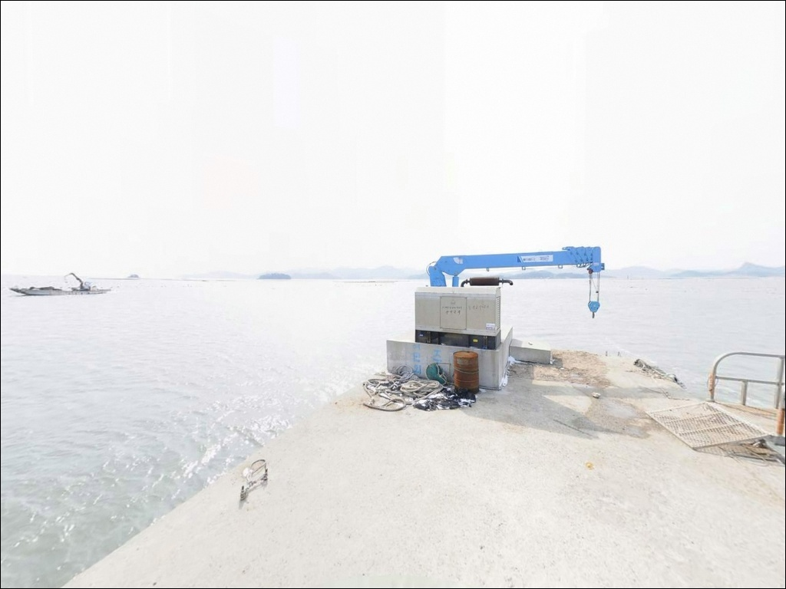
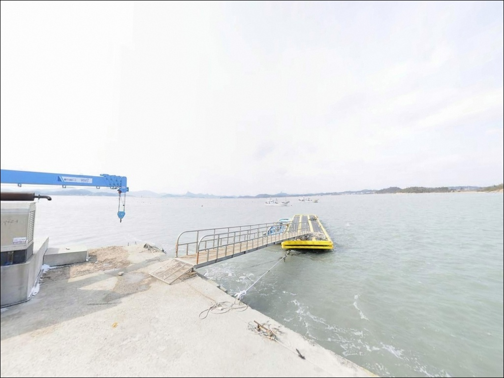
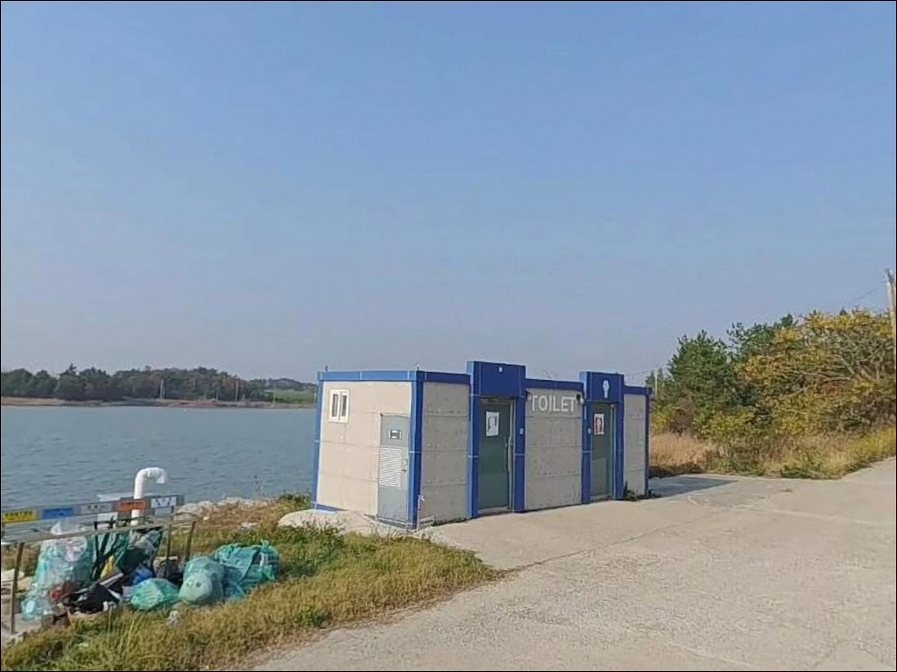

옥동방파제, 옥동리 선착장, 옥매광산, 전남 해남군 바다의 여운이 오래 남는 차박, 낚시 감성 포인트


포인트 안내
옥동방파제(옥동리 선착장)
전남 해남군 황산면 옥동리 414-3
물때 확인 없이 이 포인트에 진입하면
간조 시에는 선착장 주변 수심이 급격히 낮아져
채비를 던질 자리조차 남지 않는 상황을 맞게 됩니다.
황산면 해안은 갯벌형 지형이 발달한 서해 남부 권역으로,
만조 전후 타이밍 판단이 방문 성패를 가르는
핵심 조건입니다.
이 글은 옥동방파제의
진입 동선, 차박 여건, 물때 판단 기준,
낚시 방식 적합성에 집중합니다.
직접 조황 기록이 없는 포인트인 만큼
어종 보장이나 조황 단정은
이 글의 범위에 포함되지 않습니다.

1. 진입 동선과 주차 여건
국도 18호선 황산면 구간에서
옥동리 방향으로 진입하면 선착장에 닿습니다.
옥매광산 유휴시설 부지에
대형 10대, 소형 40대 규모의 주차 공간이
갖춰져 있어, 이 일대 소형 선착장 기준으로는
차량 수용 여건이 넉넉한 편입니다.
선착장 진입 마지막 구간은
마을 도로 수준입니다.
대형 SUV나 캠핑 장비를 갖춘 차량이라면
출발 전에 위성지도로 진입로를
미리 확인해두는 편이 안전합니다.
회차는 주차장 범위 내에서 가능하나,
어선 조업 시간대에는 동선이 겹칠 수 있으니
주차 자리는 어업 활동 구역을 피해
잡는 것이 기본 매너입니다.
진입 전 위성지도로 선착장 구간을 확인하고,
물때표와 기상 예보를 함께 점검하는 것이
이 포인트 방문의 기본 조건입니다.

2. 차박 환경과 야간 체류 여건
옥동방파제는 주차장과 화장실, 수도가
확인된 포인트입니다.
편의 여건이 없는 소형 선착장이 많은
황산면 해안에서는 이 점이 실질적인
차이를 만드는 조건입니다.
야간 환경은 가로등이 많지 않은 편이며,
개인 조명 장비는 반드시 챙겨야 합니다.
농경지와 해안이 혼재하는 옥동리 특성상
민가 밀집도가 낮아 프라이버시는 확보됩니다.
다만 명량해협 인근 지형이라
바람 영향을 받는 경우가 있으며,
기상 예보에서 해상 풍속을 미리 확인해두는 것이
차박 전 기본 판단 기준입니다.
낚시를 마치고 조용히 하룻밤 머무는 용도로는
어선 동선과 겹치지 않는 자리를 먼저 확인하는
것이 우선입니다.


3. 주변 편의시설 및 인프라 현황
옥매광산 유휴시설 기준으로
주차장·화장실·수도가 갖춰져 있습니다.
반경 3km 이내에는 황산면 소재지 방향으로
식당 이용이 가능하며,
황산농협 하나로마트가 약 5~7km 거리에 있어
식재료와 낚시 소품 보충 동선으로
활용할 수 있습니다.
주유소도 황산면 소재지 내에 위치해 있어
장거리 이동 전 들르기 좋은 동선입니다.
편의시설이 어느 정도 갖춰진 포인트이지만,
야간 방문이나 이른 새벽 출조라면
얼음·낚시 소품·비상약품은
출발 전에 준비해두는 편이
현장에서 허비하는 시간을 줄이는 방법입니다.

4. 진입 전 반드시 챙겨야 할 준비사항
가장 먼저 확인할 것은 물때입니다.
황산면 해안은 갯벌형 지형이 발달한 권역으로,
간조 시에는 선착장 주변 수심이 낮아져
채비 운용이 어려워집니다.
바다타임에서 황산면 기준 물때를 확인하고
만조 전후 2~3시간을 중심으로
입장 시각을 맞추는 것이
이 포인트를 제대로 활용하는 기본 전략입니다.
명량해협 인근이라 기상 변화가 빠른 편입니다.
해상 풍속 예보를 당일 아침에 다시 확인하고,
조류가 강한 날은 봉돌 무게를 올려
채비가 흐르는 것을 제어하는 것이
손실을 줄이는 방법입니다.
갯벌형 해안 특성상 발판이 미끄러울 수 있으니
미끄럼 방지 신발과 구명조끼는 기본 장비입니다.
선착장형 구조상 어구에 접촉하지 않도록
자리를 잡는 것이 기본 매너이며,
쓰레기는 반드시 되가져오는 것이
어촌 마을 선착장을 이용하는
기본적인 태도입니다.

5. 외해 방향으로 열린 선착장 지형이 낚시 조건을 만드는 방식
옥동방파제는 과거 광산 물류용으로 조성된
직선형 접안 구조의 소형 선착장입니다.
외해 방향으로 열려 있어
조류 흐름이 선착장 끝단 주변에서 형성되며,
끝단으로 갈수록 수심이 깊어지는
구조가 포인트의 중심 여건입니다.
황산면 일대는 리아스식 해안 구조가 발달한 지역으로,
갯벌과 암초가 혼재하는 바닥 지형이 형성되어 있습니다.
선착장 끝단과 측면이 낚시 여건이 살아나는
주 구간이며,
바닥 지형 변화가 있는 구간에서는
채비 밑걸림이 생기는 경우가 있어
여분 채비를 넉넉히 준비하는 것이 좋습니다.
옥동방파제는 직접 조황 기록이 많지 않은 포인트인 만큼,
출조 전에 황산면 일대 조황을
먼저 검색해 보시기 바랍니다.
옥동방파제는 명량해협 인근 갯벌형 해안에 자리한
소형 선착장으로,
만조 전후 2~3시간이 낚시 여건을 결정하는
포인트입니다.


6. 포인트에 어울리는 낚시 스타일
이 포인트 구조에서 가장 기본이 되는 낚시는
원투낚시입니다.
갯벌형 바닥 지형과 수심 변화가 있는
선착장 끝단 구간은
바닥을 탐색하는 방식에 적합한 구조입니다.
황산면 해역은 붕장어·망둥어·도다리 계열이
기대되는 권역이며,
갯지렁이 미끼로 바닥을 천천히 탐색하는
방식이 이 지형에 어울립니다.
찌낚시는 선착장 끝단에서
조류 흐름을 타며 운용할 수 있습니다.
황산면 인근 해역은 가을철 감성돔이
기대되는 권역으로,
만조 전후 조류가 흐르는 타이밍에
선착장 끝단 방향으로 흘리는 방식이
이 포인트의 지형 구조와 맞는 편입니다.
루어낚시는 외해 방향으로 열린 구조를 활용해
회유성 어종을 노리는 방식으로 운용합니다.
야간에 소형 미노우나 지그헤드 채비로
선착장 끝단 주변을 탐색하는 방식이 어울리며,
농어·숭어 계열이 이 일대에서
기대해볼 수 있는 어종입니다.

7. 대안 포인트와 플랜 B 동선
옥동방파제 여건이 여의치 않을 경우
가장 먼저 고려할 대안은
황산면 성산방파제입니다.
약 6~7km 거리에 있으며
방파제 구조가 갖춰진 포인트라
낚시 자리 선택 폭이 넓고,
조류 흐름과 포인트 다양성 면에서
이 권역 내 첫 번째 대안으로 고려할 만합니다.
진도 북부 방파제 라인도
이 권역에서 함께 묶어 계획할 수 있는
대안 동선입니다.
방파제 구조가 명확하고 포인트 선택 폭이 넓어,
옥동방파제를 탐색하고 이동하는 순서로
동선을 짜는 것이 효율적입니다.
임하도 선착장은 약 8~10km 거리의 대안 포인트로,
감성돔 포인트로 알려진 곳입니다.
해남 어란진방파제는 더 먼 거리지만
감성돔·농어·학공치가 기대되는 포인트로,
원거리 플랜 B로 참고할 수 있습니다.

조용한 탐색형 포인트,
물때만 맞추면 낚시와 차박이
함께 성립하는 곳입니다
원투낚시와 찌낚시, 루어낚시를
복수로 운용하면서 황산면 해안 지형을
직접 파악하고 싶은 낚시꾼에게
어울리는 포인트입니다.
직접 조황 기록이 많지 않은 만큼
기대치를 조율하고 탐색형으로 접근하는 것이
이 포인트를 즐기는 현실적인 방법입니다.
주차장·화장실·수도가 갖춰져 있어
차박 기반 낚시 여행자에게도
나쁘지 않은 여건입니다.
만조 타이밍에 낚시를 마치고
조용히 하룻밤 머무는 출조 계획에
잘 맞는 구조이며,
이 일대 갯벌형 해안의 특성을
직접 체험하고 싶은 낚시꾼이라면
물때 확인과 진입로 사전 점검만
갖추고 간다면 기억에 남는 포인트가 될 수 있습니다.
황산면 인근을 처음 찾는다면
성산방파제나 진도 북부 방파제 라인을
병행 계획에 넣어두는 것이
이 일대 낚시 여행을 효율적으로
마무리하는 방법입니다.